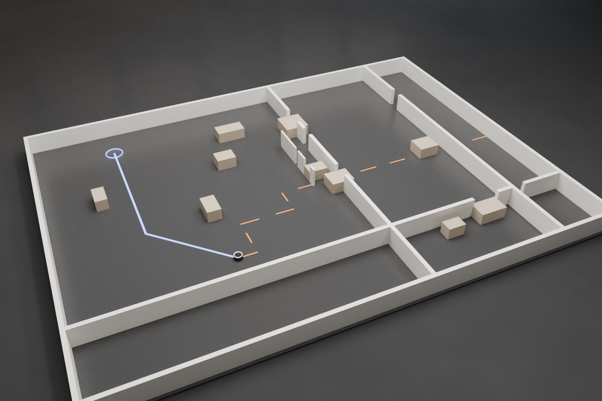

Navigation safety
Detect, recover, or halt.
llm-nav-shield
A language model proposes a route. The shield checks it, replaces it when it is wrong, and stops when no safe route exists.
38 / 40bad routes replaced with a verified one. None unsafe sent on.